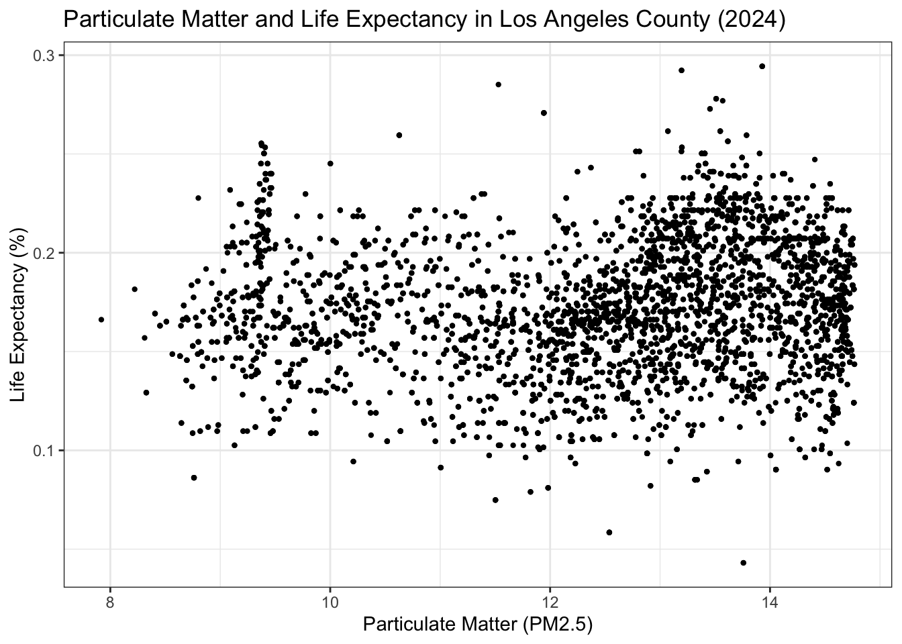
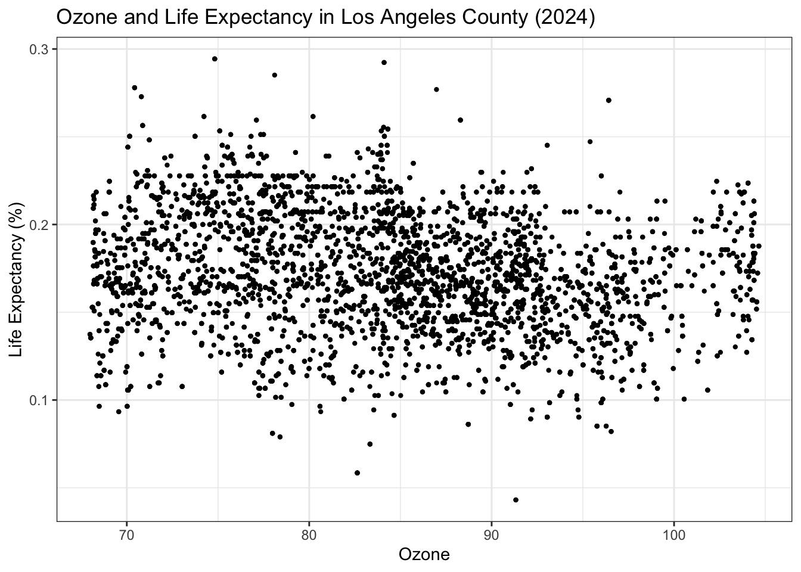
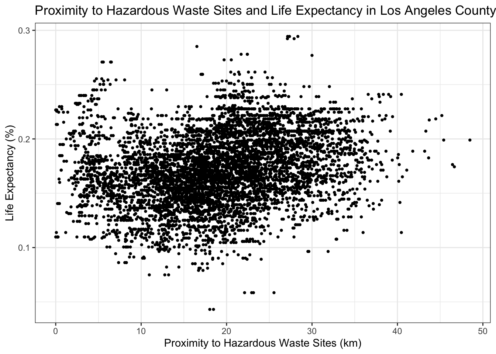
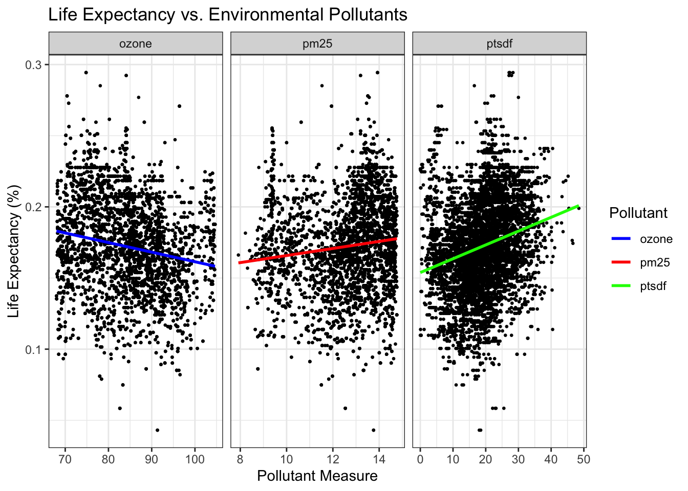
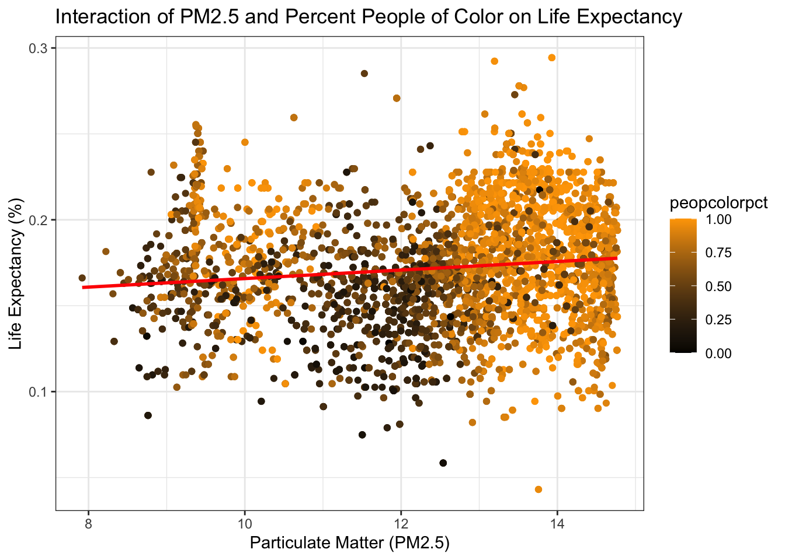
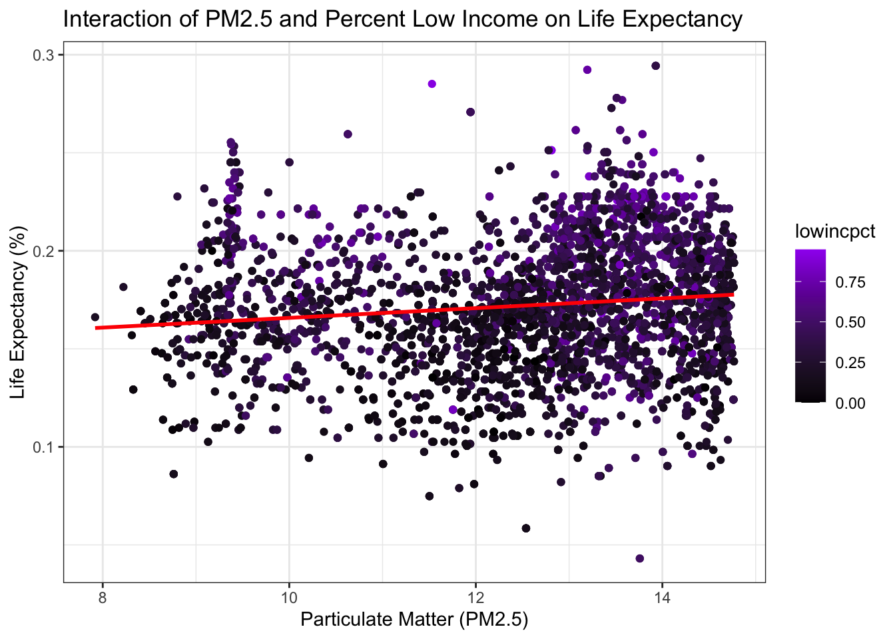
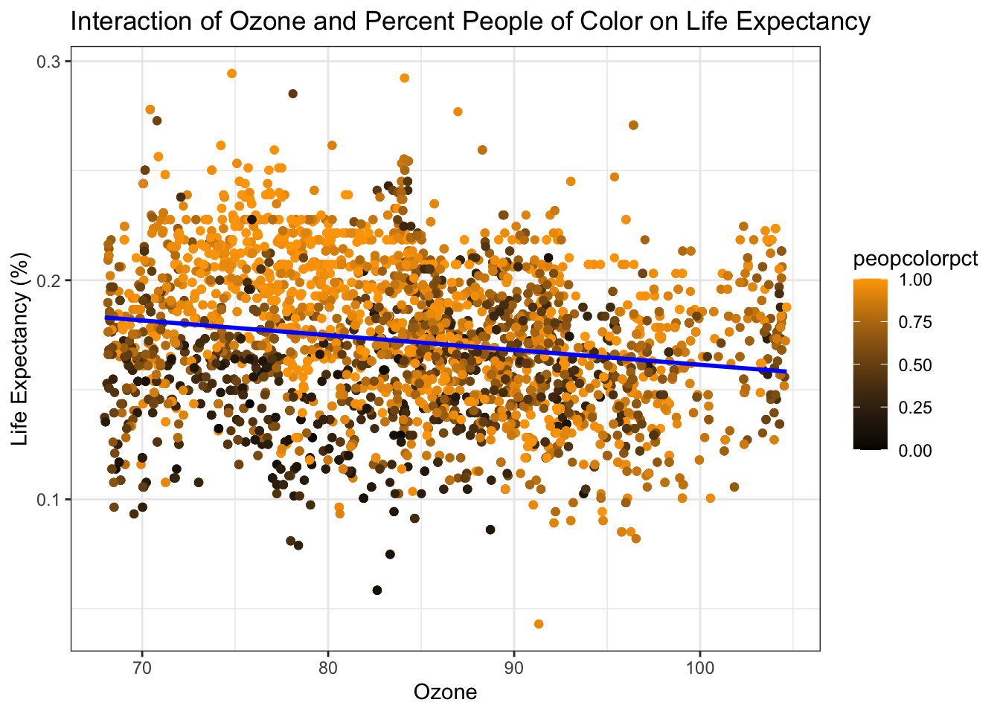
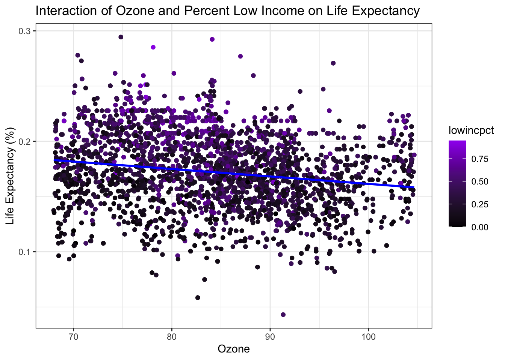
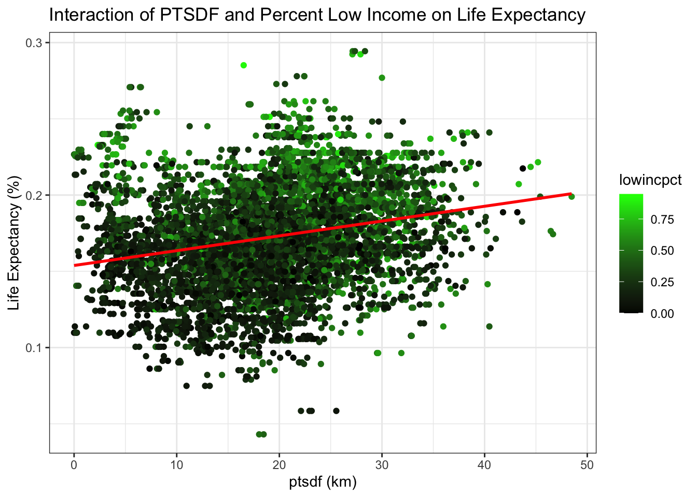

Code
library(here)
library(tidyverse)library(here)
library(tidyverse)ejscreen <- read_csv(here("data", "EJSCREEN_2024_BG_StatePct_with_AS_CNMI_GU_VI.csv"))
los_angeles <- ejscreen %>%
filter(CNTY_NAME == "Los Angeles County") %>%
select(ID:REGION, LIFEEXPPCT, PEOPCOLORPCT, LOWINCPCT, PM25, OZONE, PTSDF) %>%
rename_all(tolower) %>%
drop_na()# Scatterplot for Particulate Matter vs. Life Expectancy
ggplot(data = los_angeles, aes(x = pm25, y = lifeexppct)) +
geom_point(size = 0.8) +
labs(title = "Particulate Matter and Life Expectancy in Los Angeles County (2024)",
x = "Particulate Matter (PM2.5)",
y = "Life Expectancy (%)") +
theme_bw()
# Scatterplot for Ozone vs. Life Expectancy
ggplot(los_angeles, aes(x = ozone, y = lifeexppct)) +
geom_point(size = 0.8) +
labs(title = "Ozone and Life Expectancy in Los Angeles County (2024)",
x = "Ozone",
y = "Life Expectancy (%)") +
theme_bw()
# Scatterplot for Proximity to Hazardous Waste Sites (PTSDF) vs. Life Expectancy
ggplot(los_angeles, aes(x = ptsdf, y = lifeexppct)) +
geom_point(size = 0.8) +
labs(title = "Proximity to Hazardous Waste Sites and Life Expectancy in Los Angeles County (2024)",
x = "Proximity to Hazardous Waste Sites (km)",
y = "Life Expectancy (%)") +
theme_bw()
# Scatterplot for Percentage Low Income vs. Life Expectancy
ggplot(los_angeles, aes(x = lowincpct, y = lifeexppct)) +
geom_point(size = 0.8) +
labs(title = "Percentage Low Income and Life Expectancy in Los Angeles County (2024)",
x = "Percentage Low Income (%)",
y = "Life Expectancy (%)") +
theme_bw()# Scatterplot for Percentage People of Color vs. Life Expectancy
ggplot(los_angeles, aes(x = peopcolorpct, y = lifeexppct)) +
geom_point(size = 0.8) +
labs(title = "Percentage People of Color and Life Expectancy in Los Angeles County (2024)",
x = "Percentage People of Color (%)",
y = "Life Expectancy (%)") +
theme_bw() pm25 ozone ptsdf lowincpct lifeexppct peopcolorpct
pm25 1.00 -0.10 0.59 0.17 0.12 0.46
ozone -0.10 1.00 -0.52 -0.02 -0.19 0.05
ptsdf 0.59 -0.52 1.00 0.29 0.24 0.39
lowincpct 0.17 -0.02 0.29 1.00 0.41 0.52
lifeexppct 0.12 -0.19 0.24 0.41 1.00 0.38
peopcolorpct 0.46 0.05 0.39 0.52 0.38 1.00| pm25 | ozone | ptsdf | lowincpct | lifeexppct | peopcolorpct | |
|---|---|---|---|---|---|---|
| pm25 | 1.00 | -0.10 | 0.59 | 0.17 | 0.12 | 0.46 |
| ozone | -0.10 | 1.00 | -0.52 | -0.02 | -0.19 | 0.05 |
| ptsdf | 0.59 | -0.52 | 1.00 | 0.29 | 0.24 | 0.39 |
| lowincpct | 0.17 | -0.02 | 0.29 | 1.00 | 0.41 | 0.52 |
| lifeexppct | 0.12 | -0.19 | 0.24 | 0.41 | 1.00 | 0.38 |
| peopcolorpct | 0.46 | 0.05 | 0.39 | 0.52 | 0.38 | 1.00 |
# Simple regression model
model <- lm(lifeexppct ~ pm25 + ozone + ptsdf, data = los_angeles)
summary(model)
Call:
lm(formula = lifeexppct ~ pm25 + ozone + ptsdf, data = los_angeles)
Residuals:
Min 1Q Median 3Q Max
-0.126511 -0.021482 -0.000339 0.021437 0.113805
Coefficients:
Estimate Std. Error t value Pr(>|t|)
(Intercept) 1.841e-01 5.296e-03 34.765 < 2e-16 ***
pm25 1.022e-04 3.200e-04 0.319 0.749
ozone -3.287e-04 5.364e-05 -6.128 9.43e-10 ***
ptsdf 7.626e-04 7.584e-05 10.056 < 2e-16 ***
---
Signif. codes: 0 '***' 0.001 '**' 0.01 '*' 0.05 '.' 0.1 ' ' 1
Residual standard error: 0.03196 on 6289 degrees of freedom
Multiple R-squared: 0.06136, Adjusted R-squared: 0.06091
F-statistic: 137 on 3 and 6289 DF, p-value: < 2.2e-16| Coefficients | Estimate | Std. Error | t value | Pr(> |
|---|---|---|---|---|
| (Intercept) | 1.841e-01 | 5.296e-03 | 34.765 | < 2e-16 *** |
| pm25 | 1.022e-04 | 3.200e-04 | 0.319 | 0.749 |
| ozone | -3.287e-04 | 5.364e-05 | -6.128 | 9.43e-10 *** |
| ptsdf | 7.626e-04 | 7.584e-05 | 10.056 | < 2e-16 *** |
title: Simple Regression Model
Residual standard error: 0.03196 on 6289 degrees of freedom Multiple R-squared: 0.06136, Adjusted R-squared: 0.06091 F-statistic: 137 on 3 and 6289 DF, p-value: < 2.2e-16
Explanation of Model Results Significant Predictors: ozone and ptsdf are significant predictors (p-values < 0.001). pm25 is not statistically significant in this model. Adjusted R-squared: Indicates only ~6% of the variance in life expectancy is explained by the model. This suggests other unmeasured factors might influence life expectancy. Residual Standard Error: ~0.03196 shows the average deviation of actual values from predicted ones.
library(ggplot2)
# Reshape the data into long format for faceting
pollutants <- los_angeles %>%
gather(key = "Pollutant",
value = "Value", pm25, ozone, ptsdf) # gather predictors into one column
# Create the plot
ggplot(data = pollutants, aes(x = Value, y = lifeexppct)) +
geom_point(size = 0.5) +
geom_smooth(method = "lm", se = FALSE, aes(color = Pollutant)) +
facet_wrap(~ Pollutant, scales = "free_x") +
labs(x = "Pollutant Measure",
y = "Life Expectancy (%)",
title = "Life Expectancy vs. Environmental Pollutants") +
theme_bw() +
scale_color_manual(values = c("blue","red", "green"))
# Multiple regression model
summary(lm(lifeexppct ~ pm25 + ozone + ptsdf + peopcolorpct + lowincpct, data = los_angeles))
Call:
lm(formula = lifeexppct ~ pm25 + ozone + ptsdf + peopcolorpct +
lowincpct, data = los_angeles)
Residuals:
Min 1Q Median 3Q Max
-0.139044 -0.018357 0.001822 0.019575 0.106760
Coefficients:
Estimate Std. Error t value Pr(>|t|)
(Intercept) 2.146e-01 4.870e-03 44.072 < 2e-16 ***
pm25 -1.092e-03 2.990e-04 -3.654 0.000261 ***
ozone -7.951e-04 4.964e-05 -16.017 < 2e-16 ***
ptsdf -1.683e-04 7.183e-05 -2.343 0.019141 *
peopcolorpct 3.679e-02 1.858e-03 19.802 < 2e-16 ***
lowincpct 4.828e-02 2.269e-03 21.280 < 2e-16 ***
---
Signif. codes: 0 '***' 0.001 '**' 0.01 '*' 0.05 '.' 0.1 ' ' 1
Residual standard error: 0.0286 on 6287 degrees of freedom
Multiple R-squared: 0.2486, Adjusted R-squared: 0.248
F-statistic: 416 on 5 and 6287 DF, p-value: < 2.2e-16| Coefficients | Estimate | Std. Error | t value | Pr(> |
|---|---|---|---|---|
| (Intercept) | 2.146e-01 | 4.870e-03 | 44.072 | < 2e-16 *** |
| pm25 | -1.092e-03 | 2.990e-04 | -3.654 | 0.000261 *** |
| ozone | -7.951e-04 | 4.964e-05 | -16.017 | < 2e-16 *** |
| ptsdf | -1.683e-04 | 7.183e-05 | -2.343 | 0.019141 * |
| peopcolorpct | 3.679e-02 | 1.858e-03 | 19.802 | < 2e-16 *** |
| lowincpct | 4.828e-02 | 2.269e-03 | 21.280 | < 2e-16 *** |
Residual standard error: 0.0286 on 6287 degrees of freedom Multiple R-squared: 0.2486, Adjusted R-squared: 0.248 F-statistic: 416 on 5 and 6287 DF, p-value: < 2.2e-16
# Reshape the data into long format for faceting
coefficients <- los_angeles %>%
gather(key = "Coefficient",
value = "Value", pm25, ozone, ptsdf, peopcolorpct, lowincpct)
# Create the plot
ggplot(data = coefficients, aes(x = Value, y = lifeexppct)) +
geom_point(size = 0.5) +
geom_smooth(method = "lm", se = FALSE, aes(color = Coefficient)) +
facet_wrap(~ Coefficient, scales = "free_x") +
labs( x = "Coefficient Measure",
y = "Life Expectancy (%)",
title = "Life Expectancy vs. Environmental Pollutants and Socioeconomic Factors") +
theme_bw() +
scale_color_manual(values = c("purple", "blue", "orange", "red", "green"))# Interaction model (pm25)
summary(lm(lifeexppct ~ pm25 + ozone + ptsdf + lowincpct + peopcolorpct + pm25:lowincpct + pm25:peopcolorpct, data = los_angeles))
Call:
lm(formula = lifeexppct ~ pm25 + ozone + ptsdf + lowincpct +
peopcolorpct + pm25:lowincpct + pm25:peopcolorpct, data = los_angeles)
Residuals:
Min 1Q Median 3Q Max
-0.138298 -0.018374 0.001921 0.019595 0.106336
Coefficients:
Estimate Std. Error t value Pr(>|t|)
(Intercept) 1.762e-01 1.015e-02 17.369 < 2e-16 ***
pm25 2.272e-03 8.385e-04 2.710 0.006750 **
ozone -8.134e-04 4.974e-05 -16.354 < 2e-16 ***
ptsdf -1.960e-04 7.240e-05 -2.708 0.006796 **
lowincpct 7.113e-02 1.843e-02 3.860 0.000115 ***
peopcolorpct 8.244e-02 1.491e-02 5.528 3.38e-08 ***
pm25:lowincpct -1.751e-03 1.436e-03 -1.220 0.222597
pm25:peopcolorpct -3.767e-03 1.203e-03 -3.132 0.001747 **
---
Signif. codes: 0 '***' 0.001 '**' 0.01 '*' 0.05 '.' 0.1 ' ' 1
Residual standard error: 0.02856 on 6285 degrees of freedom
Multiple R-squared: 0.251, Adjusted R-squared: 0.2502
F-statistic: 300.9 on 7 and 6285 DF, p-value: < 2.2e-16| Coefficients | Estimate | Std. Error | t value Pr(> | t |
|---|---|---|---|---|
| (Intercept) | 1.762e-01 | 1.015e-02 | 17.369 | < 2e-16 *** |
| pm25 | 2.272e-03 | 8.385e-04 | 2.710 | 0.006750 ** |
| ozone | -8.134e-04 | 4.974e-05 | -16.354 | < 2e-16 *** |
| ptsdf | -1.960e-04 | 7.240e-05 | -2.708 | 0.006796 ** |
| lowincpct | 7.113e-02 | 1.843e-02 | 3.860 | 0.000115 *** |
| peopcolorpct | 8.244e-02 | 1.491e-02 | 5.528 | 3.38e-08 *** |
| pm25:lowincpct | -1.751e-03 | 1.436e-03 | -1.220 | 0.222597 |
| pm25:peopcolorpct | -3.767e-03 | 1.203e-03 | -3.132 | 0.001747 ** |
Residual standard error: 0.02856 on 6285 degrees of freedom Multiple R-squared: 0.251, Adjusted R-squared: 0.2502 F-statistic: 300.9 on 7 and 6285 DF, p-value: < 2.2e-16
ggplot(los_angeles, aes(x = pm25, y = lifeexppct, color = peopcolorpct)) +
geom_point() +
geom_smooth(method = "lm", se = FALSE, color = "red") +
labs(x = "Particulate Matter (PM2.5)",
y = "Life Expectancy (%)",
title = "Interaction of PM2.5 and Percent People of Color on Life Expectancy") +
scale_color_gradient(low = "black", high = "orange") +
theme_bw()
ggplot(los_angeles, aes(x = pm25, y = lifeexppct, color = lowincpct)) +
geom_point() +
geom_smooth(method = "lm", se = FALSE, color = "red") +
labs(title = "Interaction of PM2.5 and Percent Low Income on Life Expectancy",
x = "Particulate Matter (PM2.5)",
y = "Life Expectancy (%)") +
scale_color_gradient(low = "black", high = "purple") +
theme_bw()
# Interaction model (ozone)
summary(lm(lifeexppct ~ pm25 + ozone + ptsdf + lowincpct + peopcolorpct + ozone:lowincpct + ozone:peopcolorpct, data = los_angeles))
Call:
lm(formula = lifeexppct ~ pm25 + ozone + ptsdf + lowincpct +
peopcolorpct + ozone:lowincpct + ozone:peopcolorpct, data = los_angeles)
Residuals:
Min 1Q Median 3Q Max
-0.13495 -0.01806 0.00168 0.01881 0.10658
Coefficients:
Estimate Std. Error t value Pr(>|t|)
(Intercept) 5.760e-02 1.090e-02 5.286 1.29e-07 ***
pm25 -3.570e-04 2.992e-04 -1.193 0.233
ozone 1.046e-03 1.248e-04 8.384 < 2e-16 ***
ptsdf -4.230e-04 7.293e-05 -5.800 6.96e-09 ***
lowincpct 3.485e-02 2.166e-02 1.609 0.108
peopcolorpct 2.629e-01 1.635e-02 16.086 < 2e-16 ***
ozone:lowincpct 1.353e-04 2.576e-04 0.525 0.599
ozone:peopcolorpct -2.710e-03 1.937e-04 -13.991 < 2e-16 ***
---
Signif. codes: 0 '***' 0.001 '**' 0.01 '*' 0.05 '.' 0.1 ' ' 1
Residual standard error: 0.02804 on 6285 degrees of freedom
Multiple R-squared: 0.2781, Adjusted R-squared: 0.2773
F-statistic: 345.9 on 7 and 6285 DF, p-value: < 2.2e-16| Coefficients | Estimate | Std. Error | t value | Pr(> |
|---|---|---|---|---|
| (Intercept) | 5.760e-02 | 1.090e-02 | 5.286 | 1.29e-07 *** |
| pm25 | -3.570e-04 | 2.992e-04 | -1.193 | 0.233 |
| ozone | 1.046e-03 | 1.248e-04 | 8.384 | < 2e-16 *** |
| ptsdf | -4.230e-04 | 7.293e-05 | -5.800 | 6.96e-09 *** |
| lowincpct | 3.485e-02 | 2.166e-02 | 1.609 | 0.108 |
| peopcolorpct | 2.629e-01 | 1.635e-02 | 16.086 | < 2e-16 *** |
| ozone:lowincpct | 1.353e-04 | 2.576e-04 | 0.525 | 0.599 |
| ozone:peopcolorpct | -2.710e-03 | 1.937e-04 | -13.991 | < 2e-16 *** |
Residual standard error: 0.02804 on 6285 degrees of freedom Multiple R-squared: 0.2781, Adjusted R-squared: 0.2773 F-statistic: 345.9 on 7 and 6285 DF, p-value: < 2.2e-16
ggplot(los_angeles, aes(x = ozone, y = lifeexppct, color = peopcolorpct)) +
geom_point() +
geom_smooth(method = "lm", se = FALSE, color = "blue") +
labs(title = "Interaction of Ozone and Percent People of Color on Life Expectancy",
x = "Ozone",
y = "Life Expectancy (%)") +
scale_color_gradient(low = "black", high = "orange") +
theme_bw()
ggplot(los_angeles, aes(x = ozone, y = lifeexppct, color = lowincpct)) +
geom_point() +
geom_smooth(method = "lm", se = FALSE, color = "blue") +
labs(title = "Interaction of Ozone and Percent Low Income on Life Expectancy",
x = "Ozone",
y = "Life Expectancy (%)") +
scale_color_gradient(low = "black", high = "purple") +
theme_bw()
# Interaction model (ptsdf)
summary(lm(lifeexppct ~ pm25 + ozone + ptsdf + lowincpct + peopcolorpct + ptsdf:lowincpct + ptsdf:peopcolorpct, data = los_angeles))
Call:
lm(formula = lifeexppct ~ pm25 + ozone + ptsdf + lowincpct +
peopcolorpct + ptsdf:lowincpct + ptsdf:peopcolorpct, data = los_angeles)
Residuals:
Min 1Q Median 3Q Max
-0.139873 -0.018319 0.001913 0.019828 0.107733
Coefficients:
Estimate Std. Error t value Pr(>|t|)
(Intercept) 2.094e-01 5.169e-03 40.513 < 2e-16 ***
pm25 -1.008e-03 3.003e-04 -3.358 0.000791 ***
ozone -7.771e-04 5.053e-05 -15.380 < 2e-16 ***
ptsdf -1.352e-05 1.613e-04 -0.084 0.933184
lowincpct 7.232e-02 6.077e-03 11.899 < 2e-16 ***
peopcolorpct 3.094e-02 4.551e-03 6.798 1.16e-11 ***
ptsdf:lowincpct -1.178e-03 2.779e-04 -4.238 2.29e-05 ***
ptsdf:peopcolorpct 2.720e-04 2.281e-04 1.193 0.233109
---
Signif. codes: 0 '***' 0.001 '**' 0.01 '*' 0.05 '.' 0.1 ' ' 1
Residual standard error: 0.02856 on 6285 degrees of freedom
Multiple R-squared: 0.2509, Adjusted R-squared: 0.25
F-statistic: 300.7 on 7 and 6285 DF, p-value: < 2.2e-16| Coefficients | Estimate | Std. | Error | t value |
|---|---|---|---|---|
| (Intercept) | 2.094e-01 | 5.169e-03 | 40.513 | < 2e-16 *** |
| pm25 | -1.008e-03 | 3.003e-04 | -3.358 | 0.000791 *** |
| ozone | -7.771e-04 | 5.053e-05 | -15.380 | < 2e-16 *** |
| ptsdf | -1.352e-05 | 1.613e-04 | -0.084 0.933184 | |
| lowincpct | 7.232e-02 | 6.077e-03 | 11.899 | < 2e-16 *** |
| peopcolorpct | 3.094e-02 | 4.551e-03 | 6.798 | 1.16e-11 *** |
| ptsdf:lowincpct | -1.178e-03 | 2.779e-04 | -4.238 | 2.29e-05 *** |
| ptsdf:peopcolorpct | 2.720e-04 | 2.281e-04 | 1.193 | 0.233109 |
Residual standard error: 0.02856 on 6285 degrees of freedom Multiple R-squared: 0.2509, Adjusted R-squared: 0.25 F-statistic: 300.7 on 7 and 6285 DF, p-value: < 2.2e-16
ggplot(los_angeles, aes(x = ptsdf, y = lifeexppct, color = peopcolorpct)) +
geom_point() +
geom_smooth(method = "lm", se = FALSE, color = "red") +
labs(title = "Interaction of PTSDF and Percent People of Color on Life Expectancy",
x = "ptsdf (km)",
y = "Life Expectancy (%)") +
scale_color_gradient(low = "black", high = "blue") +
theme_bw()
ggplot(los_angeles, aes(x = ptsdf, y = lifeexppct, color = lowincpct)) +
geom_point() +
geom_smooth(method = "lm", se = FALSE, color = "red") +
labs(title = "Interaction of PTSDF and Percent Low Income on Life Expectancy",
x = "ptsdf (km)",
y = "Life Expectancy (%)") +
scale_color_gradient(low = "black", high = "green") +
theme_bw()